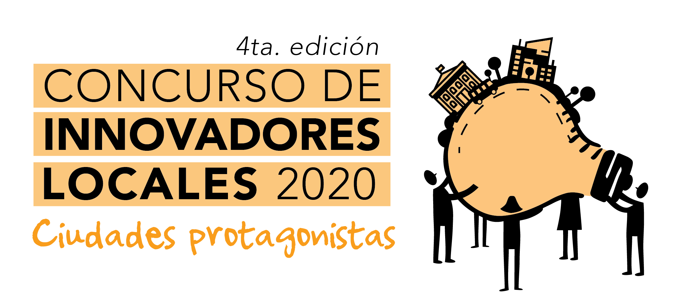

Somos gotas que hacen mares es un evento para valorar y reconocer a los más de 1000 funcionarios y funcionarias de ciudades de todo el país que forman parte de nuestra red y que trabajan día a día transformando sus ciudades en mejores lugares para vivir.
Nos vamos a INSPIRAR, nos vamos a EMOCIONAR, vamos a conocer IDEAS NUEVAS y por sobre todas las cosas, vamos a visibilizar la POTENCIA de esta red de PERSONAS que forman parte de este mar de transformación de realidades.
Modalidad: virtual
Día: 26 noviembre
Horario: 15hs a 18.30hs
Las Comunidades RIL, espacio que reúne más de 1000 funcionarios/as de todo el país que comparten desafíos y aprendizajes en red para multiplicar su impacto.
Nos conectarnos con las ventajas competitivas que nos ofrecen nuestras ciudades y nos inspiramos para seguir adelante en el camino del hacer.
¡Revivimos el Concurso de Innovadores Locales 2020 y anunciamos al ganador!
¡Además vamos a vivir momentos con mucha emoción y sorpresas!